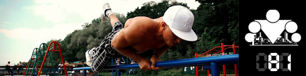

100 Дневный воркаут
<==== Вернуться к оглавлению
День 81. Величина нагрузки физических упражнений (Часть II)

Мы хотим, чтобы по окончании
программы "100 дневный воркаут"
у её участников сложился определенный фундамент теоретических знаний, необходимых для продолжения самостоятельных тренировок. В идеале мы хотим, чтобы вы могли бы сами строить свои программы тренировок непосредственно для себя, исходя из своих целей и задач. Для этого сегодня мы продолжим разбираться с характеристиками нагрузки, на этот раз внешними.
Встречайте героев сегодняшнего дня -
интенсивность
и
тренировочный объем
.
Интенсивность
- это комплексный показатель, который показывает насколько тяжело вам выполнить конкретное упражнение и он зависит от таких факторов как собственно сила, которой нужно противодействовать целевым мышцам, скорость выполнения повторений, специфическое положение тела при выполнении и т.д.
Для расчета интенсивности тренировок вам необходимо сначала узнать свои максимумы в целевых упражнениях. Если вы тренируетесь с собственным весом, то вам нужно узнать максимальное количество повторений, которое вы можете выполнить с идеальной техникой. Если же вы тренируетесь с дополнительным весом, то вам нужно узнать максимальное значение веса с которым вы можете выполнить 1 повторение с идеальной техникой.
Факторы, позволяющие увеличить интенсивность тренировок:
- Повышение сложности упражнения
- Добавление отягощения
- Сокращение времени отдыха между подходами
- Усложнение способа выполнения упражнения
Тренировочный объем
– это количество выполненных повторений в конкретных упражнениях и во всей тренировке. Соответственно, если на одной тренировке вы выполнили 100 подтягиваний, а на другой 150, то тренировочный объём второй тренировки был выше.
Следует заметить, что интенсивность и объем имеют обратную зависимость, т.е. с ростом одного параметра, второй неизбежно падает. Очевидно, что вы не сможете выполнить столько же подходов и повторений с интенсивностью в 90-100%, сколько с интенсивностью в 50%.
Возникает вопрос - какая из характеристик важнее? Какой стоит отдавать предпочтение в своих тренировках? Суть в том, что этот вопрос по самой своей природе ошибочен! Интенсивность тренировок и тренировочный объем - это две характеристики, который позволяют вам сравнивать свои тренировки друг с другом и оценивать свой прогресс. Все, как и всегда, зависит от ваших целей.
Наша программа
100 дневный воркаут
разработана, в первую очередь, для новичков, поэтому мы строим тренировки на основе умеренно-интенсивных тренировок и большого тренировочного объёма. Наша задача обучить участников правильной технике, выработать у них моторные навыки выполнения упражнений и прокачать ССС и другие системы организма. При этом мы так же считаемся с заложенной в программе идеей ежедневных тренировок. Все эти факторы определяют наш подход к интенсивности и объему нагрузок.
Наоборот, если, например, вы хотите увеличить свой максимум в подтягиваниях и при этом тренируете их 1 раз в неделю, то, очевидно, интенсивность таких тренировок должна быть ЗНАЧИТЕЛЬНО выше. Здесь перед вами стоят другие цели, а значит нужны и другие средства.
======> День 82. Травмы на тренировке